排球戰術板・教練版
Courtline 使用手冊
6 個步驟，排出第一個戰術
擺好站位、一球一球加上去、按下播放。你會看到球員怎麼跑位、在空中怎麼把球傳給下一個人——球路依照真實的物理計算，過網高度、落點和誰接得到，一眼就清楚。
我想要…
快速上手（6 步）
第一次用？照著做一次，大約 5 分鐘。做完你會有一段「發球 → 接發 → 舉球 → 攻擊」的戰術動畫，並且取好名字、存成檔案。
-
打開 Courtline
第一次打開會看到歡迎畫面。想先看成品，按先看示範，會自動播放內建的「示範：發球到攻防」（雙方 6 對 6，發球 → 接發 → 舉球 → 攻擊 → 防守）。想自己動手，按從空白球場開始。
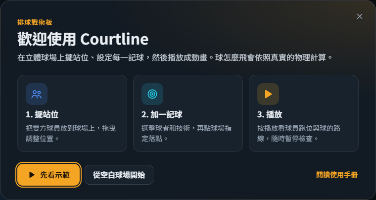
歡迎畫面。之後隨時可以從「檔案 → 載入示範戰術」再看一次示範。 -
擺好雙方站位
空白球場中間有一張卡片。按擺好雙方 6 人，雙方會照 1–6 號位站好。
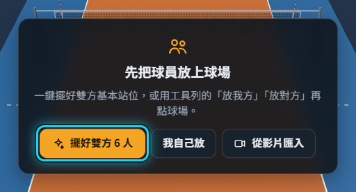
按圈起來的「擺好雙方 6 人」。 想調整某個人的位置，在場上直接拖曳他。
-
按「加下一球」的「發球」
看右側的擊球分頁，在加下一球下面按發球。
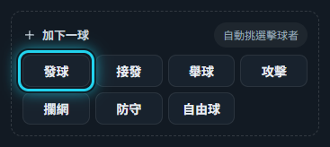
「加下一球」的技術按鈕。右上角寫著「自動挑選擊球者」。 👀 按之前先看一眼右上角：這一球由誰打？
平常寫「自動挑選擊球者」：Courtline 自己挑。發球找我方離底線最近的人，他會先退到底線外發球，發完再走回場內。
想指定某個人打？在場上點他（例如 我3）。右邊會自動切到球員分頁、顯示 我3 的資料，所以「加下一球」暫時看不到了——這是正常的。兩種做法都可以：
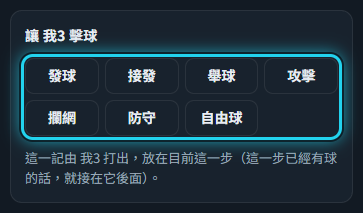
做法一：在「球員」分頁直接按讓 我3 擊球下面的技術。 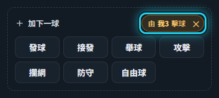
做法二：按上方的「擊球」分頁回來，右上角寫「由 我3 擊球 ×」，再按技術。按 × 改回自動挑選。 點過的人只用一次：加完這一球，就自動改回「自動挑選擊球者」。
-
點球場，指定落點
加好之後，左側工具會自動切到瞄準落點，場上淡淡標出雙方的 1–6 號區；滑鼠移到哪裡，旁邊就寫「對方 1 號區」這類位置。在你想讓球落下的地方點一下，球速和角度會自動算好，球場下方跳出「已瞄準：界內，落在…」。點完一次就回到選取。瞄準時點到哪裡就是瞄準哪裡：就算那裡剛好浮著某位球員的名牌，也是瞄準名牌下面的地板。
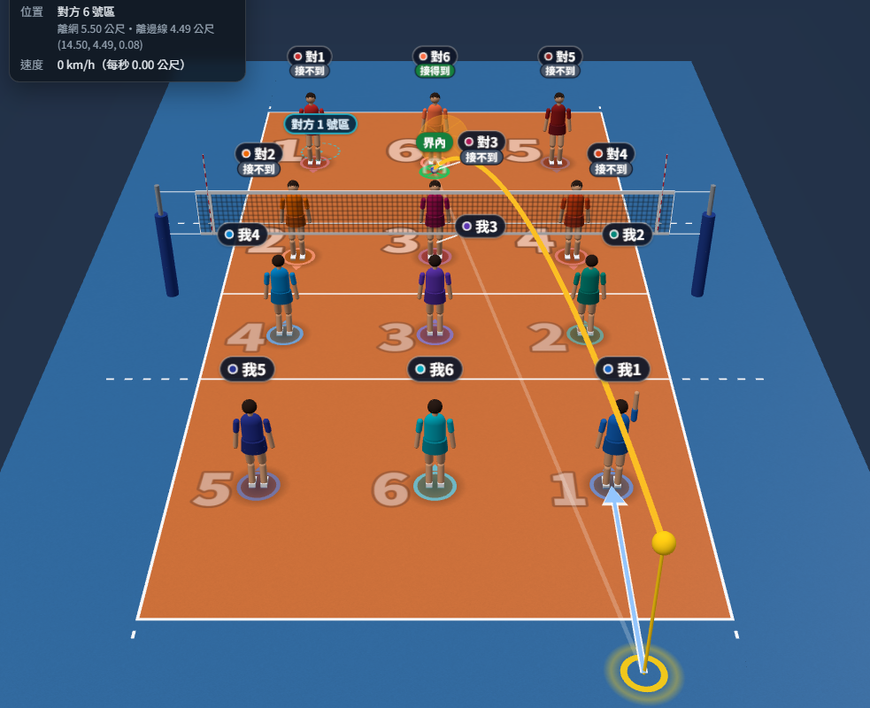
瞄準時：發球已經先瞄在對方後排中間；場上標出號區，游標旁寫出「對方 1 號區」。對方 1 號位在畫面左上（他們面向我們）。 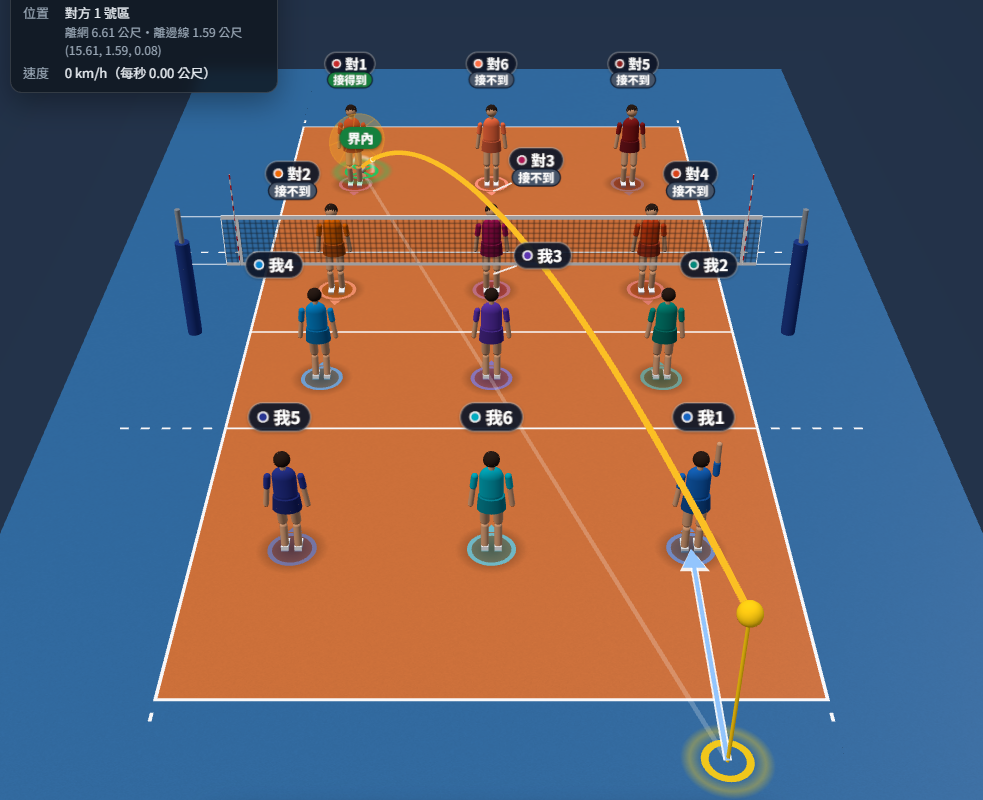
點下去：球路落在對方 1 號區。球員頭上的小標籤寫著誰「接得到」、誰「接不到」（判斷方式見第 6 章）。 右側的結果卡片同時告訴你結論：界內、出界、掛網…，以及落在哪一區。
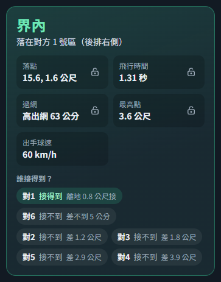
結果卡片：大字是結論，下面是細節。 💡 想改落點，再按一次瞄準落點（或按 T）再點。每一區在畫面哪裡，看號位圖。
-
一球接一球加下去，然後播放
繼續按接發、舉球、攻擊。每按一次，下方就多一步，Courtline 會自己挑人：找球落下來的那一邊、離球最近的人，他先跑到球下面，在空中接到球再打出去（接發約在離地 0.9 公尺、舉球 2.4 公尺、攻擊 3 公尺）。結果卡會寫「傳到 對3」這類句子，詳見球怎麼在空中傳遞。
每一球加好時，已經先瞄在這種球常見的位置：接發傳到網前給舉球員、舉球舉到 4 號位、攻擊打進對方場地。所以點場地是選擇性的——滿意就直接按下一個技術（或按 Esc 不瞄準）；想換落點，趁工具還在瞄準落點時點一下場地就好。
例如發球打到對方 1 號區之後，連按接發、舉球、攻擊，下方步驟會依序出現「接發 對1」「舉球 對3」「攻擊 對4」：對1 接起、對3 舉球、對4 扣球，全部在空中接力。
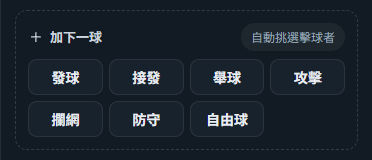
擊球分頁最上方的「加下一球」：按一個技術就多一步。 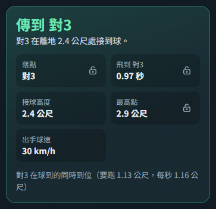
接發那一步的結果：「傳到 對3」，對3 在離地 2.4 公尺接到，接著舉球。 我方發球落在對方場地，所以接下來是對方接發、舉球、攻擊。想排我方的接發進攻，看讓對方先發球。
最後按左下角的播放鍵（或按 空白鍵）。想慢慢看、講解給球員聽，先按播放列右邊的½×（半速）。
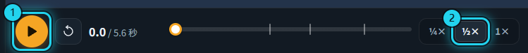
① 播放 ② 半速（½×） -
取名並存檔
按檔案 → 儲存成檔案。還沒取名的戰術會先跳出「替這個戰術取個名字」，輸入好認的名字（例如「接發進攻 4 號位」）再按儲存。戰術檔會下載到電腦的「下載」資料夾，檔名就是戰術名稱。
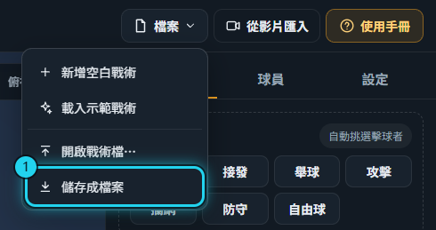
① 檔案 → 儲存成檔案。 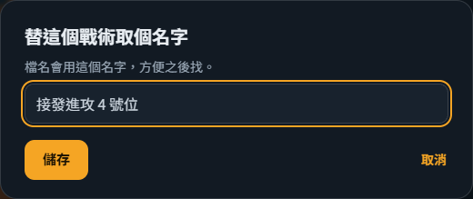
② 取個名字，按「儲存」。 也可以隨時點左上角的戰術名稱直接改名。其實不存檔也不會不見：每個修改都會自動存在這台電腦的瀏覽器裡，名字旁邊的小字會寫「儲存中…」，接著「已自動儲存」。存成檔案是為了帶走、分享或備份；也可以直接按 Ctrl+S（等於「檔案 → 儲存成檔案」）。


💡 做錯了別擔心
按 Ctrl+Z 或上方的復原就能退回上一個動作，連「新增空白戰術」都能換回來。
畫面導覽
整個畫面分成五塊：上方是檔案，左邊是工具，中間是球場，右邊是設定這一球的地方，下方是播放和步驟。

- 戰術名稱點一下就能改名。旁邊的小字是自動儲存的狀態，例如「已自動儲存」「儲存中…」，剛打開還沒改過的示範則寫「尚未自動儲存」（每種狀態的意思見第 11 章）。
- 檔案選單新增、載入示範、開啟和儲存戰術檔。旁邊是「從影片匯入」和「使用手冊」。
- 場上工具選取、放我方、放對方、瞄準落點、擊球點、箭頭、畫線，各有一個快捷鍵；最下面是「? 快捷鍵」。
- 球場拖曳球員、點地板指定落點；在空白地板上拖曳可以轉動視角。
- 視角按鈕我方視角、對方視角、俯視、側面，一鍵切換。
- 右側分頁「擊球」加下一球和設定每一球，「球員」管理名單，「設定」放進階選項。
- 擊球結果界內、出界、傳到誰、過網多高、誰接得到，都在這張卡片。
- 播放播放／暫停、從頭播放、拖曳時間、切換慢動作。
- 步驟「共 N 步」、起始站位和之後的每一步；點一下就跳到那一步編輯。
左側的場上工具

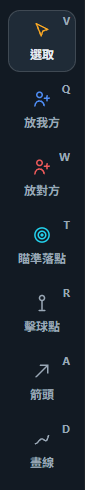
| 工具 | 用途 |
|---|---|
| 選取 V | 點球員選取、拖曳移動；拖曳選中那一球的落點圈可以改落點；拖曳空白地板轉動視角；雙擊空白處回正。平常停在這個工具就好。 |
| 放我方 Q | 點球場放一位我方球員（最多 6 人）。 |
| 放對方 W | 點球場放一位對方球員（最多 6 人）。 |
| 瞄準落點 T | 點球場上想讓球落下的位置，自動算出球速與角度。點一次就回到選取。點到名牌或球員身上，也是瞄準那裡的地板；要改選球員，先按 Esc 回到選取再點他。 |
| 擊球點 R | 點球場或拖曳，移動目前這一球從哪裡打出（場上黃色的圈），擊球者會跟著一起移過去。高度在「擊球」分頁調整。 |
| 箭頭 A | 在地上拖出箭頭，標示跑位方向。 |
| 畫線 D | 按住拖曳，自由畫出路線。 |
| 清除畫線 | 場上有箭頭或畫線時才會出現，一次全部清掉（可以復原）。 |
| ? 快捷鍵 | 在工具列最下面，打開快捷鍵一覽（見附錄 B）。 |
上方列還有這些
- 復原／重做：退回或重做上一個動作（Ctrl+Z／Ctrl+Y）。
- 網高：男子 2.43 或 女子 2.24 公尺。切換後所有球路會立刻重算。
- 從影片匯入：把比賽影片變成走位動畫，見第 12 章。
- 使用手冊：在新分頁打開這份手冊。
💡 看不懂下一步？看球場最下面
球場最下方有一行小字，會告訴你目前的工具怎麼用。做完一個動作後，那行小字上面會跳出簡短的提示（例如「已加入第 2 步：對1的接發…」），幾秒後自動消失，也可以按 × 關掉。
擺站位
每邊最多 6 人。可以一鍵擺好基本站位，也可以自己一個一個放。

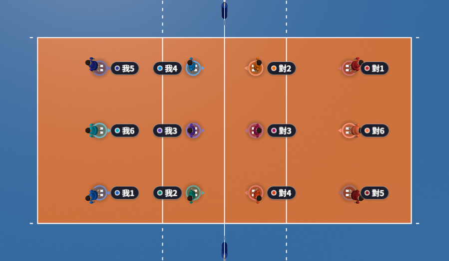
一鍵擺好
空白球場上按擺好雙方 6 人，雙方都會站到 1–6 號位。已經有人的時候，到右側球員分頁，按某一隊旁邊的補滿 6 人站位，就會把空著的號位補上。
自己放
- 按左側放我方（Q）或放對方（W）。
- 在球場上點想放的位置，一次放一位。名字會自動取成「我1、我2…」或「對1、對2…」。
- 放好後按選取（V）或 Esc 回到一般模式。
移動球員
在選取模式下，直接用滑鼠拖曳球員到新位置。
👆 點過、拖過的球員會「選中」
點一下或拖過的球員會被選中：右側會自動切到「球員」分頁、顯示他的資料，可以直接按讓 他 擊球下面的技術按鈕。按回擊球分頁，「加下一球」右上角也會寫「由 他 擊球」，下一球就由他打。要取消，按那個標籤上的 ×，或按「球員」分頁最上面的← 全部球員。剛用「放我方／放對方」放下的球員不會被選中。
📌 每一步的站位分開記錄
你拖的是下方亮著的那一步的位置。在前面的步驟移動球員時，後面還沒動過他的步驟會跟著一起改；後面已經另外擺過他的步驟（例如他在那一步跑去接球），則保持原樣。如果這位球員是某一球的擊球者，擊球點也會跟著他走。
拖的是在空中接球的人時（例如舉球員），上一球會改傳到他的新位置，他自己那一球仍打到原本的落點。新位置接不到上一球時，會提示「這位球員移到了接不到上一球的位置；上一球的路線沒有改。」
球員分頁
右側球員分頁列出雙方名單，以及每個人目前站在幾號區。點一位球員可以：
- 改名字（例如換成背號或姓名，按 Enter 確定）和球衣顏色。
- 用「在「起始站位」的位置」（或「在「第 N 步」的位置」）下面的離我方底線、離左邊線兩個滑桿，以公尺為單位微調目前這一步的位置。「左邊」是從我方往對方看的左手邊。用滑桿移動和直接拖曳一樣：回合會接好，他在空中接的那一球會改傳到他的新位置。
- 用接球習慣決定「誰接得到？」怎麼看這位球員（見第 6 章）。預設勾著跟全隊預設一樣；取消勾選，就會出現他自己的接球範圍設定（一開始是全隊預設的複本），可以只調他一個人，例如把「用上手接球」關掉。再勾回去，他自己的設定就會丟掉、改回跟全隊一樣。這些調整都可以復原。
- 按讓 我1 擊球下面的技術按鈕，直接讓他打下一球。
- 按移除這位球員把他從戰術裡拿掉（他打的球保留，但沒有擊球者；他自己的接球習慣也一起拿掉）。

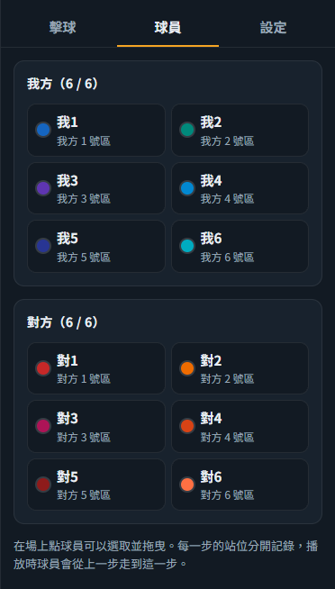

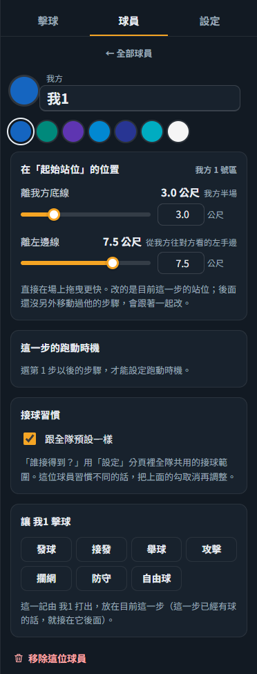

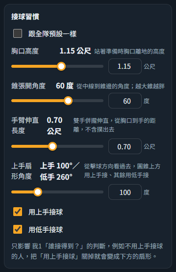
加下一球與瞄準落點
先選技術，再點球場告訴它球要落在哪裡。誰來打、跑到哪裡接、球速和角度，交給 Courtline 算。
加下一球
在右側擊球分頁的「加下一球」，按下其中一個技術：
選一個已經加好的球
想看或修改某一球，不用找清單，直接點下方步驟列上那一步（例如「接發 對1」），那一步的球就會被選中，右側「擊球」分頁會顯示它的數字。也可以點場上那條球路來選它。
如果某一球不在任何一步裡（例如刪掉或移走了它原本的那一步），它還在，只是下方看不到：點一個別的步驟，在這一步的擊球的下拉選單選它，就能放回那一步。
一球接一球：新的一球放在哪裡？
- 停在起始站位時（例如剛擺好站位，或剛按過起始站位）：新的一球接在整個回合最後一球的後面。
- 停在某一步時：新的一球放進自己的一步，接在那一步後面（如果那一步是還沒有擊球的「跑位」，就直接放進那一步）。
所以排「發球 → 接發 → 舉球 → 攻擊」時，只要依序按下去：每一球已經先瞄在常見的位置，下一個人會自己跑去接；想換落點，加完那一球時點一下場地。加完之後畫面會停在新的那一步。場上還沒有球員時，會先請你擺好站位；發球後面不能直接加攔網（對方接發球請用「接發」）。
💡 想排「我方」的接發進攻？讓對方先發球
我方發球時，球落在對方場地，接下來的接發、舉球、攻擊就是對方在打。想練我方接發進攻：在場上點一位對方後排球員（例如 對1）的名牌，右邊切到「球員」分頁後，按讓 對1 擊球下面的發球（或回到「擊球」分頁，看到「由 對1 擊球」再按發球），球會落在我方場地；再依序按接發、舉球、攻擊，就是我方球員在打（接發傳到網前給 我3、舉球舉給 4 號位的 我4，都會自動瞄好；想換落點再點場地）。
⚠️ 點回中間的步驟再加球，會插在中間
例如你點回「發球」那一步檢查，再按舉球，舉球就會插在發球和接發中間。要加在最後面，先點起始站位或最後一步再加。插錯了就按 Ctrl+Z 復原再加一次。
誰來打這一球？
看「加下一球」右上角的小標籤：
- 「由 我3 擊球 ×」：你剛點過或拖過 我3（或在「球員」分頁選了他），這一球就由他打。注意：一點球員，右邊就會切到球員分頁（所以「加下一球」暫時不見了）；可以直接按那裡讓 我3 擊球下面的技術按鈕，或按擊球分頁回來，看到這個標籤再按技術（兩張圖見第 1 章第 3 步）。正在瞄準落點時點球員只會瞄準那裡的地板，要選人先按 Esc。如果不是發球或攔網，他會跑到上一球落下的位置去打，上一球的球路不會被改。他接不到上一球（在網子另一邊，或上一球就是他打的，不能連續觸球）時，會改由最近接得到的人打，並提示原因。按 × 改回自動挑選。加完這一球，選中會自動取消。
- 不能在中間插一球：選的那一步的球如果下一步已經有人接著打（例如舉球後面已經有攻擊），再按技術會被擋下並說明原因，原本的球都不會變。要換人或換打法，請到下一步改技術或擊球者；要接在後面，先選最後一步。
- 「自動挑選擊球者」：Courtline 依技術挑人——
- 發球：我方離底線最近的人（回合中途也一樣）。他先退到底線外 1 公尺發球，這一步再走回原位。
- 攔網：球過網那一邊的前排、離過網點最近的人，移到網前攔網。
- 其他技術：上一球落下穿過這個技術的擊球高度（接發約 0.9 公尺、舉球 2.4 公尺、攻擊 3 公尺、防守 0.8 公尺）那一點，在那半場離它最近的人（剛擊球的人除外）。他在上一步跑到那裡，在空中接球再打出去。
- 上一球出界時，通常不會有人接，這一球先不指定擊球者；找不到合適的人時，擊球者是「（未指定）」，下方步驟上這一步只有技術名稱、後面沒有人名（處理方法見常見問題）。
加好之後才想換人：在結果卡片下面「這一記怎麼打」的擊球者選單選一個人。新選的人會跑到原本打這一球的位置（在上一步跑到原本的接球點，在空中接球；發球就是退到底線外），原本的人回到他自己的位置。這一球仍打到原本的落點。
💡 快速連按技術按鈕（例如不小心按兩下「接發」）只會加一球，不會多出一記。
號位圖：每一區在畫面的哪裡
結果卡片會說球「落在對方 6 號區（後排中間）」。左邊這張圖，就是你在我方視角看到的方向：我方在下面，對方在上面。
- 我方 1 號位在右後（畫面右下）。
- 對方 1 號位在畫面的左上角。對方面向我們站，所以他們的「右後」在我們的左邊。
- 離網 3 公尺內是前排，其他是後排；左右各分三等份。
- 「號位」和「號區」說的是同一塊位置：擺站位時說號位，結果卡片說號區。
- 不用背：瞄準時場上會直接標出 1–6 號區，滑鼠旁也會寫「對方 1 號區」。
- 寬螢幕的俯視是橫的：我方在左、對方在右，我方 1 號位在左下、對方 1 號位在右上（見第 3 章的圖）。手機上的俯視是直的，對方在上。
- 切到對方視角時，整張圖會上下左右反過來。
例：讓發球打到對方 1 號位——按「加下一球」的發球，在我方視角點對方場地左後角（圖中圈起來的那一區），看到「對方 1 號區」再點。
瞄準落點
加好一球後，Courtline 會先瞄一個這種球常見的落點（例如發球瞄對方後場中間、接發瞄網前），並把工具切到瞄準落點，讓你點一次：
- 在球場上點你想讓球落下的位置。按住拖曳的話，球路會跟著滑鼠即時預覽，放開就確定。
- Courtline 自動算出球速、擊球角度和方向，球場下方跳出「已瞄準：界內，落在…」的提示。
- 點完一次就回到選取。想再改，按右側結果卡片下面的大按鈕瞄準落點，或按 T；不想改就按 Esc。
- 瞄準時地板優先：點到球員的名牌或身上，也是瞄準那個位置的地板（不會自動吸到球員身上）。要選某位球員，先按 Esc 回到選取，再點他。

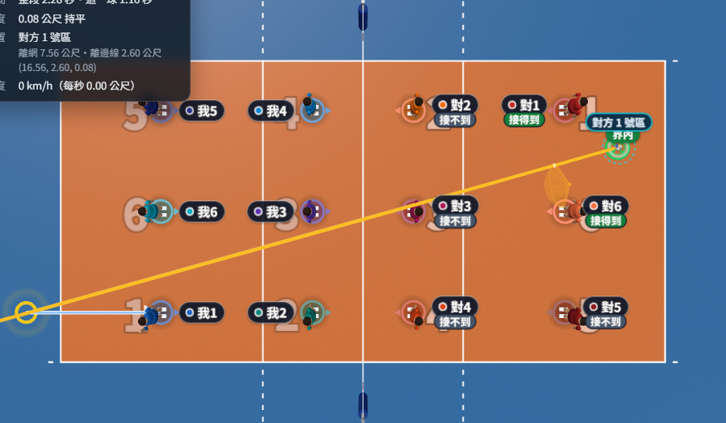
不切工具也能改：拖曳落點圈
在選取模式下，選中的那一球在場上有一個落點圈：落地的球是地上的落點標記（界內綠色、出界紅色的十字圈，滑鼠移上去會亮起白光）；被隊友在空中接走的球，是接球的人手上的橘色接球圈。按住這個圈拖到新位置再放開，就等於重新瞄準：球路跟著預覽，放開才確定；接這一球的人也會跟著移到新的接球點。只是點一下圈不會有任何變化（不會選人、也不會改落點）。
📌 圈上站著人時，按到的是人
如果圈上剛好站著一位不接這一球的球員，或有球員的名牌浮在圈上（例如快速上手裡發到對方 1 號區、還沒加接發時，落點就在對1腳下），按下去會選到那位球員、拖曳會移動他，落點不變。這時改用瞄準落點（T）重新點一次；如果只是名牌擋住，切到俯視就能直接拖圈。
💡 瞄準只改球速和方向
瞄準時會依技術選自然的弧線：舉球打高弧、攻擊壓低角度往下打、發球取能過網的最低弧線。瞄準只會改球速、擊球角度和方向，你設定的旋轉和擊球點不會變。
⚠️ 點的地方打不到？
例如太遠、離擊球者不到 30 公分、會先掛網，Courtline 會用一句話告訴你原因；能打到附近的話，會先用最接近的一球。發球、攻擊和自由球如果要打成超過 8 公尺高的高吊球才落得到（通常是點得離網太近），會直接拒絕並提示「請點離網遠一點的位置」。被拒絕時工具仍停在瞄準落點，球路不變，直接再點一個離網遠一點的位置就好。
📌 改落點，後面的回合會跟著留住
重新瞄準一球時，原本接這一球的下一個人會跟著移到新的接球點，他那一球也會重新瞄準原本的落點，所以回合後面不變。新的落點已經不在他那一邊時，他不動，並提示「X 接不到這顆球了，下一記仍從原本的位置打出。」
球怎麼在空中傳遞
真實的排球很少落地才打。Courtline 也一樣：下一個人跑到球下面，在空中接到，再把球打出去。
交接：「傳到 X」
每一球都有自己的擊球高度：接發約離地 0.9 公尺、舉球 2.4 公尺、攻擊 3 公尺、攔網 3.1 公尺、防守 0.8 公尺。加下一球時，下一個人會在上一步跑到上一球往下穿過這個高度的位置，在那裡接球。這時上一球就在他手上結束：
- 結果卡寫傳到 對3和「對3 在離地 2.4 公尺處接到球」，四個數字的前兩項換成飛到 對3（幾秒）和接球高度。
- 球場上，球停在接球的人手上，那裡有一個橘色的接球圈；之後的球路、落點、接球範圍和「誰接得到？」都不再畫。
- 交給對方的球（例如發球被對方接起）照落地來判斷界內或出界，說明最後加一句「對1 在離地 0.9 公尺處接起。」

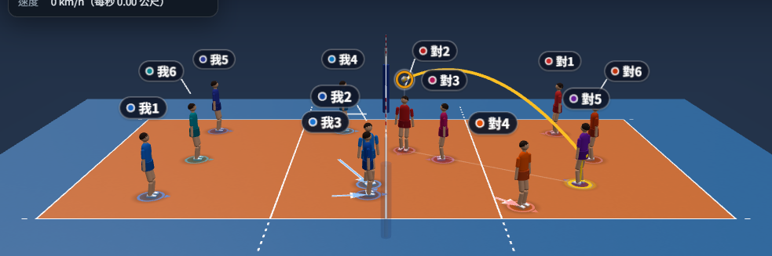
還沒有人接：「傳到位」
接發、舉球、防守這種傳給隊友的球，如果後面還沒有下一球，結果卡會寫傳到位，告訴你球在多高、落到哪一區附近，並提醒「加一記「舉球」，就會有人在這裡接」（舉球之後則是「攻擊」）；四個數字的第二項寫傳球高度。照著加，下一個人就會自己跑過去，在空中接到這一球。加完後下方步驟上那一步後面沒有人名的話，看常見問題。

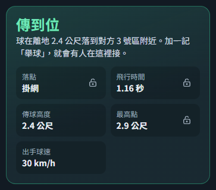
攔網：「被 X 攔下」
攻擊之後加攔網，防守方前排離過網點最近的人會移到網前，在網上把攻擊攔住。攻擊那一球的結果卡會寫被 我2 攔下；攔網那一球再決定球彈到哪裡。

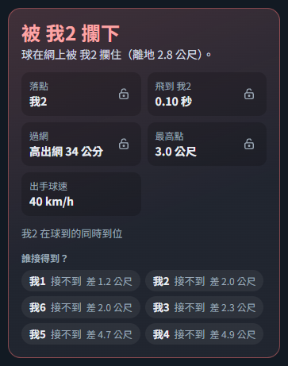
為什麼「加一段跑位」會插在球的前面？
在空中連續傳遞的一串球（例如發球 → 接發 → 舉球），每一球都在下一個人手上結束，中間沒有時間再讓大家跑位。所以停在這一串裡的某一步按加一段跑位時，Courtline 會把跑位放在這一串的前面（例如發球之前），並提示「這一串球在空中連續傳遞，跑位插進中間會打斷它，所以放在這一串的前面」。把球員拖到新位置，播放時他們會先跑過去，再開始這一串。
讀懂結果
每一球的結果都在右側「擊球」分頁的結果卡片上。改任何設定，結果會立刻更新，不用按計算。

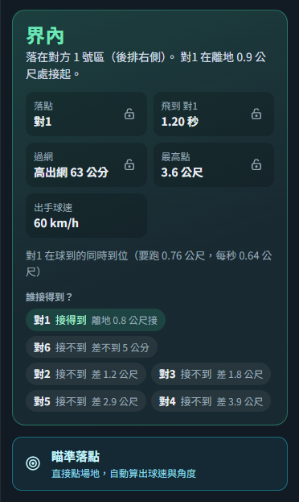
大字結論
- 界內
- 球落在場內，並說出落在哪一區，例如「落在對方 6 號區（後排中間）」。壓線也算界內，會寫「壓線，」。
- 傳到 X
- 隊友在空中接到了，見第 5 章。
- 傳到位
- 傳給隊友的球已經到位，但還沒加下一球。
- 出界
- 告訴你超出多少，例如「超出對方底線約 80 公分」。
- 掛網
- 球還沒過網就碰到網子。
- 沒過網
- 發球、攻擊或自由球落在自己的場內。
- 被 X 攔下
- 攻擊在網上被對方攔網攔住。
- 這球過網了
- 接發、舉球、防守本來要傳給隊友，卻飛過網了。真的要送過網，把技術改成「自由球」。
- 變成吊球
- 攻擊是往上打出去的，比較像吊球。把擊球點調高，或讓前一球（舉球）舉高一點。
- 球還沒落地
- 4 秒內沒有落地，通常是角度或擊球點太高。
- 擊球點太低
- 球一出手就碰到地板，把擊球高度調高。
- 還沒有人打這一球
- 這一球沒有擊球者（例如找不到合適的人，或打這一球的球員被移除了）。在下方「擊球者」選一位球員，球才會從他手上出發。
四個數字
- 飛行時間：球從擊出到落地幾秒。被隊友接走的球改寫飛到 X：飛到他手上幾秒。
- 過網：經過網子時高出網頂幾公分。低於網頂會寫「低於網頂 n 公分」；寫「沒有經過網子」表示這一球留在同一邊；寫「沒過網」就是掛網了。被隊友接走的球改寫接球高度。
- 最高點：整段飛行最高到幾公尺。
- 出手球速：球被擊出時的速度，以 km/h 表示。
誰接得到？
結果卡片下方會列出落點那半場的球員（不含擊球者）。每個人一行：接得到表示球員有辦法碰到這一球，接不到就是趕不上。判斷的方式是：
- 胸口前面有一個「接球範圍」。它是一個圓錐，尖端在胸口，正對著擊球的人打球的位置（不是往下斜、也不是扁的）。錐的粗細由「錐張開角度」決定（從中線到錐邊，預設 60 度）。錐的長度只算雙手併攏、手臂伸直能碰到的距離（預設 0.70 公尺），不把撲出去算進去。球只要飛進這個錐裡，就碰得到。
- 上面用上手、下面用低手。從擊球的方向看過去，圓錐的圓形截面分成上下兩個扇形：上方的扇形是用上手（過頭）接，預設 100 度；其餘的 260 度是用低手（下手）接，兩邊加起來永遠是 360 度。每個人的習慣不同，例如不用上手接球的球員，把「用上手接球」關掉，就只剩下方的大扇形。上手和低手都關掉，這個人就什麼球都接不到。
- 球員不一定站著不動。球被擊出後，球員先反應一下（預設 0.20 秒），然後從站著開始加速跑，大約一秒多才到全速（第一秒大約跑 2 公尺）。他跑到哪裡，接球範圍就跟到哪裡，而且錐的方向維持擊球那一刻對著擊球點的方向，不會隨著他跑動而轉。只要球在落地前有任何一刻，飛進他跑得到的那個範圍，就算接得到。
- 起點是擊球那一刻大家站的位置。只看球在球員自己這半場的那一段，不會去接對面場地上的球。
- 每個人可以有自己的習慣。沒特別設定時，全隊用同一組接球範圍；個別球員（例如不用上手接球的人）可以到球員分頁的「接球習慣」另外調整，只影響他一個人。
每一行的小字說明了細節：
- 「離地 1.1 公尺接」：球員在球離地大約這個高度時碰到它。能在離地 30 公分以上碰到，就不會等到球快落地才接；寫著很低的數字，代表只能貼地救球。
- 「要跑 3.6 公尺」：他得先跑這麼遠才碰得到；沒寫就是站在原地就碰得到。
- 「差 2.0 公尺」：接不到的人，離能碰到球最近的那一刻還差這麼遠。
排列順序：接得到的人在前面，先碰到球的排前面；接不到的人在後面，差得少的排前面。用來快速檢查防守站位有沒有漏洞。

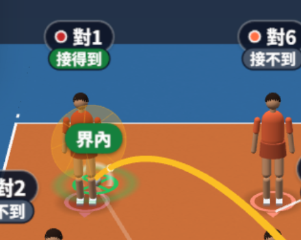
球場上，那些球員頭頂的名牌也會加上同樣的「接得到」或「接不到」（第 1 章第 4 步的圖可以看到）。被隊友在空中接走的球不列名單。判斷標準（跑多快、反應多久、錐的粗細和長度、上手與低手的比例）可以在進階設定裡調整，那是全隊的預設；個別球員的習慣在球員分頁調整。
小圓點的顏色
下方步驟上有一個小圓點，不用點開就知道每一球的結果：
- 綠色：界內、傳到 X、傳到位
- 紅色：出界、掛網、沒過網、被攔下
- 黃色：球還沒落地、擊球點太低、這球過網了、變成吊球、還沒有人打這一球
球的即時數值
只要場上看得到球，球場左上角就有一張球的數值小卡。播放時它跟著球一直更新；拖時間條時，球在哪裡、飛多高、多快，數字也一起變，所以停在任何一刻都能直接讀。

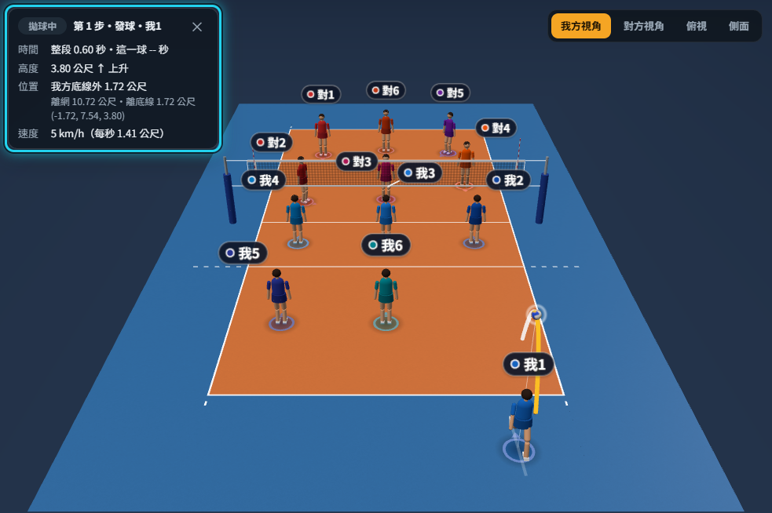
- 按播放，眼睛看左上角的小卡，數字會跟著球動。
- 想看某一刻，按暫停或拖下方的時間條，停在你要的地方，直接讀小卡。
- 想讓小卡讓出位置，按右上角的 × 收起，它會縮成一顆「球的數值」小按鈕，按一下再打開。手機畫面上它是一條單行。
小卡上的每一行：
- 狀態（最上面的小標籤）：拿著球、拋球中、飛行中、已落地、掛網、被 X 接到，或等人接。旁邊寫這是第幾步、哪一球、誰打的，例如「第 3 步・舉球・我2」。
- 時間：「整段」從整個戰術開始算；「這一球」從這一球被打出去才開始算（拋球時還是 --）。兩位小數。
- 高度：球離地幾公尺，後面寫上升或下降。
- 位置：球在哪一區、離網和離邊線（或底線）幾公尺；下面一行小字是精確座標。
- 速度：幾 km/h，括號裡是每秒幾公尺。
手動微調一記球
想要更精準的控制，就在「這一記怎麼打」直接調整。拖動滑桿時，球路和結果會跟著即時改變。
不想拉滑桿：直接輸入數字
每一條滑桿的右邊都有一個數字框，已經知道要的數字時，直接打進去，不必慢慢拉滑桿。
- 打好數字，按 Enter（或點一下框外面的地方）就會套用；按 Esc 取消，數字會回到原本的。
- 打的數字超出範圍，會自動拉到最接近的上限或下限，不會報錯。
- 框後面的小字是單位。打進去的數字，跟滑桿上方大字顯示的是同一種：例如球速打 km/h、角度打度、時間打秒、距離打公尺。
- 用數字框改一次，算一個動作：按一次 Ctrl+Z 就退回去。鎖住的列，數字框也會暫時停用；會連動的數字，照樣跟著變。
有幾個數字有正負。把滑鼠移到數字框上，會跳出一句說明正負的意思：
- 方向（度）：正的偏右、負的偏左，從擊球者的角度看；0 是正前方。
- 擊球角度（度）：正的往上，負的往下。
- 球員位置「離我方底線」（公尺）：負的是在我方底線後面，大於 18 是在對方底線後面。
- 發球的起跳點（公尺）：正的在底線後面，負的踩進場內（犯規）。發球的落地點（公尺）：正的落在場內，負的落在底線後面。開始助跑（秒）：正的是拋球後才跑，負的是拋球前就跑。
- 攻擊的起跳點與落地點（公尺）：正的離網多遠，負的是越過中線（犯規）。
跳躍高度是 0（不跳）時，和跳躍有關的幾條滑桿上方寫「不跳」，它們的數字框是空的、不能打字；先把跳躍高度設成大於 0，才能輸入。

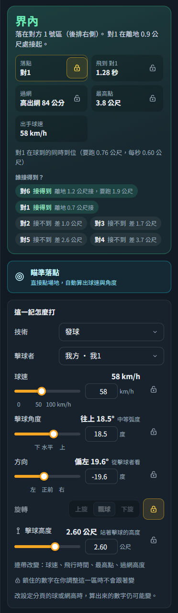
| 設定 | 意思 |
|---|---|
| 技術 | 這一球的名稱，例如把「防守」改成「自由球」。只改名字，不會改動球路。 |
| 擊球者 | 誰打這一球。換人後，新選的人會跑到原本打這一球的位置（在空中接上一球的，就跑到同一個接球點；發球就退到底線外），原本的人回到自己的位置；球仍打到原本的落點，播放時由新選的人做擊球動作。 |
| 球速 | 擊出時的速度，以 km/h 顯示。 |
| 擊球角度 | 「往上」或「往下」幾度，旁邊寫向下扣、平直、中等弧度或高弧度。 |
| 方向 | 「偏左」或「偏右」幾度，從擊球者的角度看。 |
| 旋轉 | 上旋：球往前翻滾，下墜較快。飄球：不旋轉。下旋：球往後翻滾，飛得較飄。選上旋或下旋時，可以再調轉速。 |
| 擊球高度 | 擊球點離地多高。旁邊會提示這是低手、站著，還是跳起擊球的高度。 |
移動擊球點
擊球點就是場上那個黃色的圈，球從這裡被打出去。有三種方法可以移動它：
- 在選取模式下，直接拖曳黃色的圈。
- 按左側擊球點（R），再點球場或拖曳。擊球者會跟著擊球點一起移動（他就站在擊球的地方）。高度在右側「擊球高度」調整。
- 展開精確數據與擊球位置，用「擊球點：離我方底線」「擊球點：離左邊線」滑桿微調，也能看到所有精確數字。
發球動作：拋球、助跑、起跳
新加的發球預設就會顯示發球員拋球、助跑、跳起，再把球打出去。三件事各自獨立：可以邊跑邊拋球，跳起來之後也不會馬上擊球。

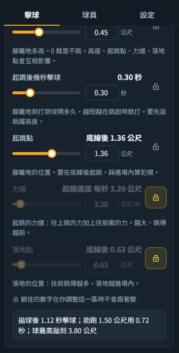
- 點一記發球，在右側「擊球」分頁往下找到發球動作。
- 勾選顯示拋球、助跑、起跳。取消勾選，發球員就直接站在擊球點把球打出去。
- 先點一種發球類型：站著發（飄球）、跳飄、跳發（大力）。一鍵套好；自己再調過就顯示「自訂」。
- 需要的話再微調：
- 拋球高度：球比擊球點高多少。拋得越高，從拋球到擊球等得越久。
- 助跑距離：從擊球點往後退多遠開始跑。0 就是站著發。
- 開始助跑：拋球後幾秒起跑；負數代表先跑再拋球。
- 跳躍高度：腳離地多高，0 就是不跳。
- 起跳後幾秒擊球：腳離地到打到球隔多久，越短越在剛跳起時就打（要先設跳躍高度）。
- 助跑速度、力道、起跳點、落地點：這四個是算出來的，也可以直接拉。力道是起跳的速度（例如「起跳速度 每秒 4.58 公尺」）；起跳點寫「底線後 0.80 公尺」，踩進場內會寫「踩進場內 0.20 公尺（犯規）」；落地點寫「場內 0.60 公尺」或「底線後 0.30 公尺」。
- 按播放（或拖時間條）看結果。區塊最下面的一句摘要會告訴你「拋球後幾秒擊球、助跑多遠用多久」；時間排不通，或跑得比一般球員衝刺還快（每秒約 7 公尺）時，會用黃字提醒。

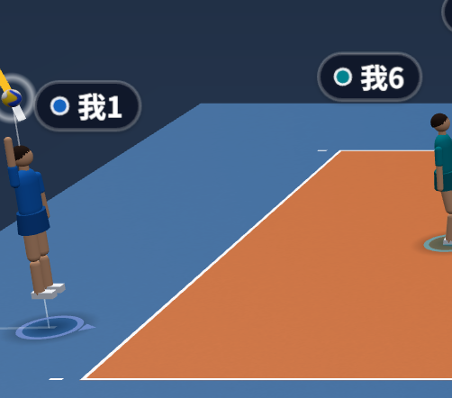
跳躍的數字互相影響，可以上鎖
跳躍的高度、起跳點、力道、落地點是綁在一起的：跳得越高，在空中停得越久，往前飄的距離也跟著變；力道越大，要嘛跳得更高，要嘛飄得更遠。所以你改其中一個，另外幾個會一起動。發球員這一串動作的順序是：等待點 → 助跑 → 起跳點 → 擊球點 → 落地點，助跑跑到起跳點就結束。
上鎖：每一列的右邊都有一個小鎖頭（每一記球的數字也能鎖，見鎖住數字）。鎖住的數字，在你調其他數字時絕對不會變；沒鎖的數字會盡量少動，只動必要的幾個。右側會有一句「連帶改變：落地點、力道」告訴你哪些數字跟著動，剛動過的列會閃一下。鎖住的那一列，滑桿和數字框會暫時停用，要改先解鎖。
例子一：鎖落地點和力道，再把跳躍高度調高。先按「落地點」和「力道」旁的鎖頭，再把跳躍高度從 0.45 調到 0.48 公尺。落地點和力道不能動，所以 Courtline 會讓他少往前飄一點，並且起跳後幾秒擊球跟著變短（約從 0.30 秒變成 0.23 秒）：跳得更高，要在同樣的位置落地，就得更早在空中把球打出去。
例子二：跑動時機也有鎖。在這一步的跑動時機鎖住跑動速度，再把起跑延遲從 0 改成 0.30 秒：他跑的速度不變，所以會晚 0.30 秒到位，「到位」那一列跟著改變。
「已調到極限」是什麼意思：你要的數字，被別的鎖住的數字（或物理上限）擋住了，做不到。這時 Courtline 會盡量往你要的方向走到最遠，停在那裡，並寫出「已調到極限：被鎖住的「力道」「落地點」擋住了」。想繼續調，就把它點名的那幾個鎖打開。例如上面的例子把跳躍高度調到 0.60 公尺，力道鎖著就辦不到。
💡 鎖住只管你在這一區調數字的時候。如果你改的是別的東西（例如擊球點、網高），算出來的數字（像助跑速度）還是可能跟著變。換「發球類型」不會解開鎖。每按一次鎖頭，Ctrl+Z 可以復原一次。
要知道的幾件事：
- 發球員助跑前站的位置，和擊球點不是同一個點：點起始站位時，他站在助跑的起點。拖他等於整個發球一起平移，擊球點也跟著動。
- 發球打出去的那一刻，才算「球開始移動」；拋球期間其他人都不動。
- 擊球之後，發球員要等落地，才從落地點開始往下一個位置跑。
- 攔網的球員，在擊球位置高過站著能碰到的高度（約 2.35 公尺）時，會自動跳起，最高點剛好在擊球那一刻，不用另外設定。攻擊的跳法可以自己設，見下一節攻擊動作。
攻擊動作：跳躍與擊球
攻擊也能像發球一樣，設定怎麼跳、什麼時候擊球：攻擊手先助跑到起跳點，跳起來，在空中把球打出去，接著往前飄一小段，再落地。不動它的時候，攻擊手還是用原本的自動跳法。

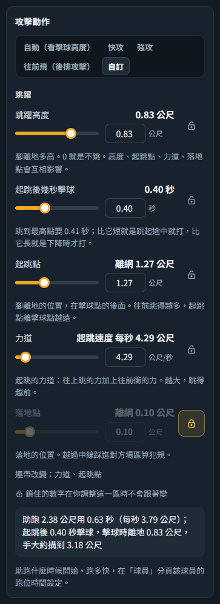
- 點一記攻擊，在右側「擊球」分頁往下找到攻擊動作。
- 先選一種跳法：
- 自動（看擊球高度）：不用設定，什麼都沒存。球員原地往上跳，跳到最高點時剛好擊球；擊球點低到不用跳，他就不跳。新加的攻擊一開始就是這個。
- 快攻：跳得低，一跳起來很快就打。
- 強攻：跳得高，跳到接近最高點才打。
- 往前飛（後排攻擊）：往前衝得遠，起跳點離擊球點比較遠。
- 自訂：自己調過數字後才會出現。
- 需要的話再微調（直接拉滑桿；在「自動」時一拉，就會先把自動算出來的數字存起來，再從那裡改）：
- 跳躍高度：腳離地多高，0 就是不跳。
- 起跳後幾秒擊球：腳離地到打到球隔多久。下面會告訴你跳到最高點要幾秒：比它短，就是跳起來的途中打；比它長，就是下降時才打。
- 起跳點、力道、落地點：這三個是算出來的，也可以直接拉。起跳點寫「離網 1.27 公尺」，落地點也是離網幾公尺；越過中線會寫「越過中線 0.20 公尺（犯規）」。力道是起跳的速度（例如「起跳速度 每秒 4.29 公尺」）：往上的力加上往前的力，越大就飄得越前。
- 按播放（或拖時間條）看結果：攻擊手跑到起跳點、跳起、在擊球點把球打出去、再往前飄一點落地。區塊最下面的摘要會寫「助跑多遠用多久」「起跳後幾秒擊球，擊球時離地多高，手大約搆到幾公尺」。擊球點比手搆得到的還高、落地越過中線等情形，會用黃字提醒。
每一列右邊同樣有鎖頭，用法和上面的發球一樣（見跳躍的數字互相影響，可以上鎖）。例如鎖住「落地點」，再把跳躍高度調高：落地點不變，力道和起跳點會跟著動，並寫在「連帶改變」那一句。每按一次鎖頭或改一次數字，Ctrl+Z 都能復原一次。
要知道的幾件事：
- 助跑不在這一區設定。攻擊手什麼時候開始跑、跑多快，在右側「球員」分頁，點該球員後的這一步的跑動時機。這一區的摘要只是把那一步的助跑讀出來給你看；沒有助跑就寫「不助跑」。
- 助跑跑到起跳點就停，不是跑到擊球點：他在起跳點離地，在空中飛到擊球點擊球。
- 擊球之後要等落地，才從落地點開始往下一個位置跑；如果這一步的時間不夠他落地，這段跑動會延到下一步。
- 起跳點和落地點，是沿著他助跑進來的方向算的；沒有助跑時，就當他面向球網。
- 改的是別的東西（例如擊球點、網高）時，算出來的起跳點、落地點仍可能跟著變，鎖頭只管你在這一區調數字的時候。
鎖住數字：鎖住落點，再調角度或擊球點
一記球的數字是互相牽動的：球速、角度、方向、擊球點，決定球飛到哪裡、飛多久、飛多高。想只改一樣、其他維持原樣，就按那一列右邊的鎖頭。鎖住的數字，在你調其他數字時絕對不會變。
- 可以鎖的：擊球點、球速、擊球角度、方向、旋轉；還有結果列的落點、飛行時間（接球時寫「飛到某人」）、最高點，球會過網的話還有過網高度。
- 鎖住的那一列，滑桿會暫時停用；要改，先把鎖打開。
最常用的例子：鎖住落點。按結果列落點旁的鎖頭，再把擊球角度調高，或把擊球點移到別的位置（拖黃色的圈、用「擊球點」工具，或用精確數據的滑桿）。Courtline 會自動調整球速（擊球點往旁邊移時方向也會跟著改），讓球仍然落在同一個點；沒鎖的數字只會動必要的幾個，並寫在滑桿下面那句「連帶改變：…」，例如「球速、飛行時間、最高點」。擊球點和旋轉不會被它偷偷改掉。剛動過的列會閃一下，也可以按 Ctrl+Z 一次退回。
「已調到極限」是什麼意思：你要的調整，被鎖住的數字（或球的物理上限）擋住了，做不到。例如落點和球速都鎖住，卻想把角度調得很高，球就到不了那一點。這時 Courtline 會盡量往你要的方向走到最遠，停在那裡，並寫出「已調到極限：被鎖住的「落點」「球速」擋住了」。想繼續調，就把它點名的鎖打開。在場上拖落點的圈、拖擊球點，碰到鎖住的數字時，則會跳出提示，球不會動。
上一球鎖住落點，這一球的擊球點也跟著固定。上一球打到哪裡，下一個人就在那裡擊球：例如鎖住舉球的落點，後面那記攻擊的擊球點就等於這個落點，所以也跟著固定，不能直接拖。這時畫面會寫「上一球（舉球）的落點鎖住了」；想移動攻擊的擊球點，請先解開舉球的落點鎖。反過來，你移動這一球的擊球點時，上一球會自動重新瞄準，而且上一球鎖住的其他數字也會守住。
這跟跳躍的數字互相影響，可以上鎖、這一步的跑動時機是同一個概念：發球員的助跑跳躍、球員的起跑時間、每一記球的數字，每一列右邊的鎖頭用法都一樣，鎖住的不變，沒鎖的盡量少動。
💡 鎖頭只管你在「這一記怎麼打」調數字、移動擊球點、瞄準落點的時候。如果你改的是設定分頁裡的球或網高，球的算法變了，落點、飛行時間這些算出來的數字仍可能跟著變。
刪除一記球
按最下面的刪除這一記。它所在的步驟會保留成「跑位」，球員的跑位還在。刪錯了按 Ctrl+Z 找回來。
💡 小技巧
拖滑桿時結果會一直更新，放開才算一個動作。所以一次「復原」就能退回拖動前的樣子。改球速、角度、方向、旋轉、擊球高度時，回合會保持接好：原本在空中接這一球的人，會跟著移到新的接球點。
步驟與播放
戰術是一步一步組成的。播放時，球員從上一步的位置跑到這一步，這一步的球同時飛出去。

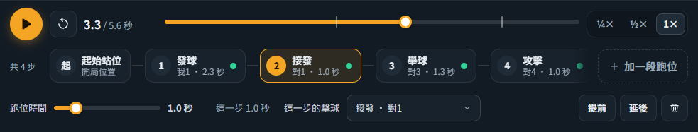
步驟是什麼
起始站位發球接發舉球攻擊
- 起始站位：開局時每個人站的位置，沒有擊球。
- 之後的每一步：標出這一步的擊球（例如「發球」），沒有擊球就寫「跑位」。下面的小字是擊球者和這一步有幾秒。左邊的「共 N 步」不算起始站位。
- 擊球者在這一步一開始、從他上一步站的位置擊球；同時大家從上一步的位置跑到這一步的位置。
- 一步的長度是「跑位時間」和「球飛完」兩者取比較長的。但球在空中被下一個人接走的那一步，到接到球的那一刻就結束：跑位時間調得再長，球也不會停在半空中等人。
點一步，看到的是這一步的「結束」

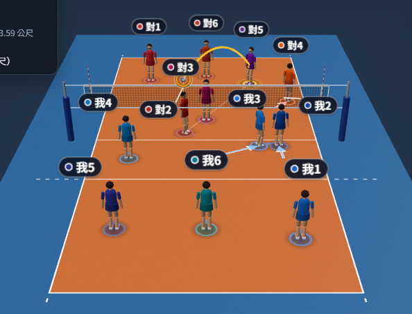
- 點某一步（或按 ← →），畫面停在這一步的結束：球已經落地，或已經交到下一個人手上；人站在這一步的位置。這一步有跑位的人，地上有淡藍色（我方）或淡紅色（對方）的箭頭，從他上一步的位置指過來。
- 點起始站位，畫面是開局那一刻：第一球準備打出去。
- 在步驟畫面上可以直接拖球員、拖擊球點、瞄準落點。
加一段跑位與整理步驟
- 加一段跑位：複製亮著那一步的站位，接在它後面，成為一步只有跑位、沒有擊球的「跑位」（1 秒）。把球員拖到新位置，播放時他們就會跑過去。最多 30 步。如果亮著的那一步屬於一串在空中連續傳遞的球，跑位會放在這一串的前面（原因見第 5 章）。
- 跑位時間：這一步球員跑到新位置要花幾秒（0.2–5 秒）。旁邊的「這一步 x 秒」是這一步實際的長度；球飛得比較久時會寫「（等球飛完）」。球被隊友在空中接走的那一步，長度就是球飛到他手上的時間，調跑位時間不會讓它變長。
- 這一步的擊球：選這一步要打哪一球，或選「（只有跑位，沒有擊球）」。
- 調整順序：提前、延後把這一步和前一步或後一步對調。起始站位固定在最前面；把第 1 步提前不了。
- 垃圾桶：刪除這一步（至少會保留一步）。這一步的球會移出時間軸但沒有被刪掉：在別的步驟的這一步的擊球選它，就能放回來。
- 對調或刪除步驟之後，每一球會改從擊球者現在的位置打出，並重新傳到下一個人手上；接不到的會提示「「接發」現在接不到下一位了，請重新瞄準。」
播放
- 播放／暫停：按大的圓形按鈕，或按 空白鍵。
- 從哪裡開始播：停在某一步按播放，從那一步開始播到最後；停在最後一步或起始站位按播放，播整個回合。
- 從頭播放：旁邊的繞圈箭頭 ↺，一律從頭播。
- 慢動作：右邊的½×是半速、¼×是四分之一速、1×是正常速度。講解給球員聽時，半速最好用。
- 拖曳時間條：停在任何一刻檢查。時間條上的刻度是每一步的結束，點刻度就跳到那一步。
暫停時，畫面停在「那一刻」

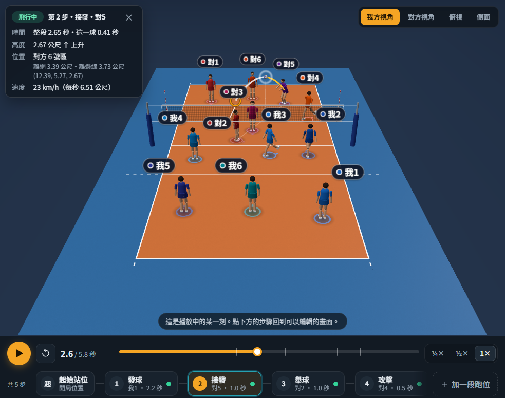
- 按暫停或拖時間條，畫面會停在那一刻：球在半空中、球員跑到一半。正在播的那一步會被標亮，右側也會切到那一球。
- 球場左上角的小卡顯示這一刻球的高度、位置、速度、時間（下一節有說明）。
- 再按播放，從這一刻接著播。想回到可以編輯的畫面，點下方的步驟；在這一刻直接拖球員或瞄準，也會先回到那一步再改。
這一步的跑動時機：幾秒後起跑、什麼時候到位
每位球員在每一步（第 1 步以後）都可以設定自己什麼時候開始跑、什麼時候要到。Courtline 會自動算出他要跑多快。

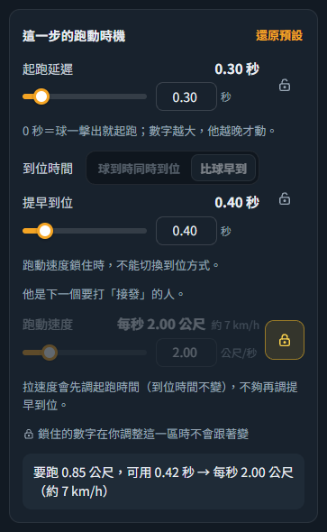
- 點下方的一個步驟（第 1 步以後；起始站位沒有跑動，不能設）。
- 在場上點一位球員，右側會切到球員分頁，找到這一步的跑動時機。
- 球擊出後幾秒才起跑：打數字（0.00 到 3.00 秒）或拉滑桿。0 秒就是球一擊出他就跑，數字越大他越晚動。這一步沒有球時，改成從這一步開始算。
- 到位時間選一種：
- 跟著步驟跑位時間：用這一步原本的跑位時間跑完。
- 球到時同時到位：只有「下一個要接球擊球的人」才有，也是他的預設。
- 比球早到：在球到之前幾秒就先站好，秒數自己填。
- 看下面那一行算給你的數字，例如「要跑 0.85 公尺，可用 0.42 秒 → 每秒 2.00 公尺（約 7 km/h）」，判斷這樣跑合不合理。
跑得比一般球員衝刺（約每秒 7 公尺）還快，或延遲長到來不及跑時，會出現黃色提醒。想回到預設，按右上角的還原預設。
起跑延遲、到位、跑動速度三個數字也是互相影響的：晚起跑，或要早一點到位，就得跑得更快。每一列右邊都有小鎖頭，鎖住的不會被你調其他列時改掉，沒鎖的才會跟著動（寫在「連帶改變」那一句）。例如鎖住跑動速度再加長起跑延遲，他就會晚到位，而不是跑更快。要是被鎖頭擋住，會寫「已調到極限」，打開被點名的鎖就能繼續調。跑動速度鎖住時，不能切換到位方式，也不能按還原預設。
💡 鎖頭只管你在這一區調數字的時候；改了球的落點或速度，算出來的跑動速度還是會變。球本身的數字（落點、球速、角度等）也能上鎖，見鎖住數字。
球到時同時到位
下一個要擊球的人（例如發球之後的接發球員）會剛好在球到的那一刻站到擊球點：不會球還在空中他已經站著等，也不會球到了他還在跑。Courtline 會自動調整他的跑速，讓兩者同時到。跳起來擊球的人（攻擊、攔網，或跳發）也一樣：最高點就在擊球那一刻。想讓他提早站好，改選比球早到；想讓他晚一點才動，加起跑延遲。
⚠️ 播放中不能編輯
按暫停（或空白鍵）停下來，就能繼續修改。
視角
球場右上角有四個視角按鈕，一鍵切換；也可以用滑鼠自由轉動。

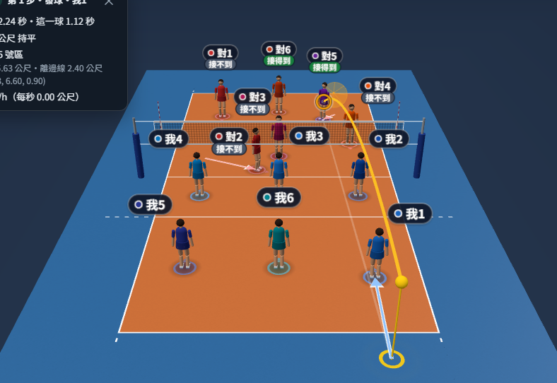

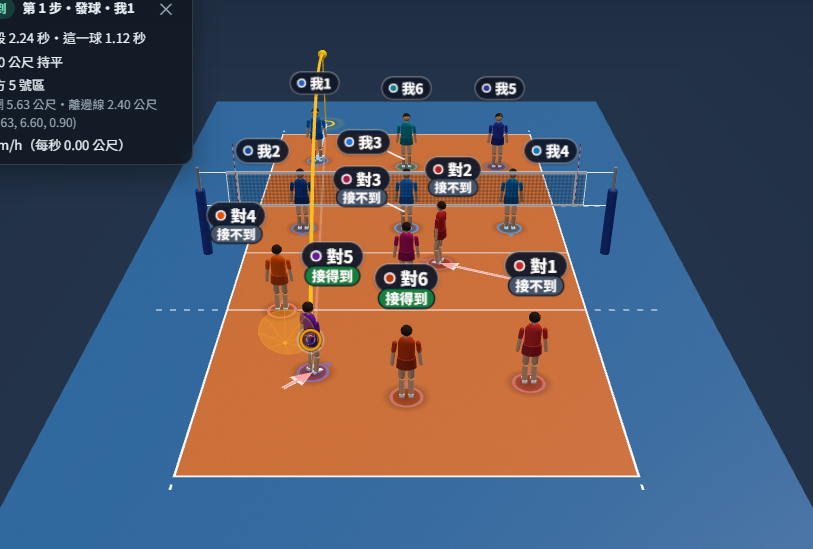

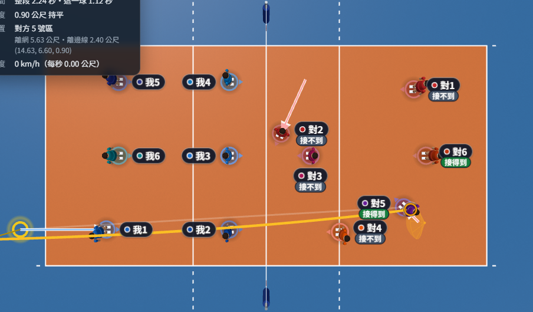

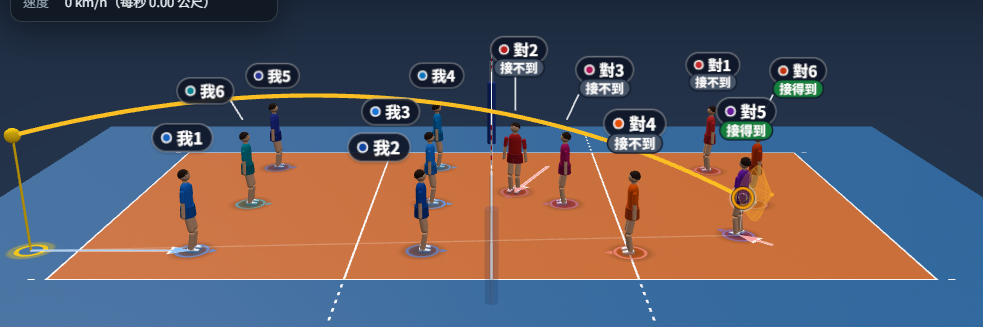
用滑鼠自由看
| 動作 | 效果 |
|---|---|
| 拖曳空白地板 | 轉動視角（要在選取模式）。 |
| 滾動滑鼠滾輪 | 先點一下球場，再滾動滑鼠拉近拉遠；或按住 Ctrl 滾動。沒先點的話，滾輪會捲動頁面，球場上會跳出提示。 |
| ⟲ 回到原本視角 | 轉過或拉近之後，球場上會出現這個按鈕，按一下就回到原本的樣子。 |
| 雙擊空白地板 | 同樣回到原本視角（選取模式）。 |
| 再按一次視角按鈕 | 同樣回到原本視角。 |
用鍵盤也可以：先點一下球場，+／− 拉近拉遠，Shift+方向鍵轉動，0 回到原本視角。手機和平板的手勢見常見問題。
箭頭與畫線
在地板上畫箭頭或路線，標出跑位方向，講解時更清楚。

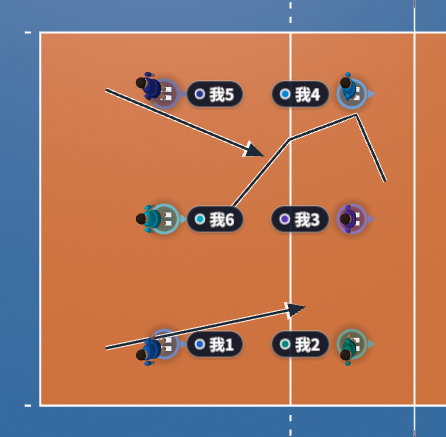
- 箭頭（A）：在球場上按住、拖到終點再放開，就會畫出一支箭頭。
- 畫線（D）：按住滑鼠自由畫，放開就完成。
- 畫好的圖形會跟著戰術一起儲存，每一步都看得到（最多 100 筆）。
- 想全部擦掉，按左側工具下方的清除畫線（場上有圖形時才會出現），一樣可以復原。
💡 小技巧
畫錯了？剛畫好的那一筆可以直接按 Delete 刪掉；更早畫的就用 Ctrl+Z 復原。畫完記得按 Esc 回到選取，才能拖曳球員。
存檔、開檔與分享
Courtline 會自動幫你存。要帶走、分享或備份時，再存成戰術檔。
自動儲存
每次修改都會自動存在這台電腦的這個瀏覽器裡，戰術名稱旁會顯示已自動儲存（存的當下是「儲存中…」）。下次用同一台電腦、同一個瀏覽器打開，會接著上次的進度。不過它只記得最新的一個戰術：換成別的戰術之後，舊的就要靠戰術檔保存。

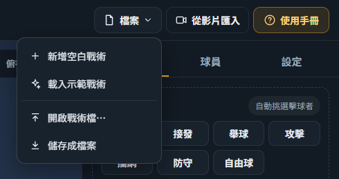
檔案選單
- 新增空白戰術：開一個全新的空白球場。
- 載入示範戰術：換成內建的「示範：發球到攻防」。
- 開啟戰術檔…：選一個之前存下來的戰術檔（.json）打開。
- 儲存成檔案（Ctrl+S）：下載戰術檔，通常在「下載」資料夾，檔名就是戰術名稱。還叫「未命名戰術」的話，會先請你取個名字。
換掉目前的戰術之前，會先問你
「新增空白戰術」「載入示範戰術」「開啟戰術檔…」和影片的「套用到球場」都會換掉畫面上的戰術。只要目前的戰術有你的心血（不是空白球場、也不是沒動過的示範），就會先跳出確認：

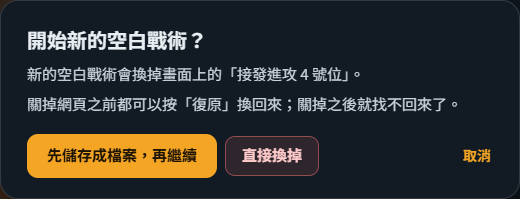
- 先儲存成檔案，再繼續：先把目前的戰術下載成檔案，再換。
- 直接換掉：不存，直接換。
- 取消：什麼都不做。
就算直接換掉了，在關掉網頁之前都可以按復原（Ctrl+Z）換回原本的戰術。
分享給其他教練、或換電腦
- 按檔案 → 儲存成檔案（還沒取名的話，順便取個名字）。
- 把下載的戰術檔用 LINE、Email、隨身碟或雲端硬碟傳過去。
- 對方打開 Courtline，按檔案 → 開啟戰術檔…，選這個檔案。
名字旁邊的狀態
| 顯示 | 意思與做法 |
|---|---|
| 已自動儲存 | 修改都存在這個瀏覽器裡了。 |
| 儲存中… | 剛改過，正在存（一眨眼就會變成「已自動儲存」）。 |
| 無法自動儲存 | 這個瀏覽器存不了草稿（可能是私密瀏覽或空間不足），同時會跳出紅色提示。照常可以編輯和播放，但請用「檔案 → 儲存成檔案」保存。 |
| 另一個分頁改過了 | 同一個戰術開在兩個分頁，另一個分頁改過它。會跳出「這個戰術在另一個分頁被修改了」，選載入那個版本或保留這裡的版本，之後恢復自動儲存。 |
| 尚未自動儲存 | 剛打開、還沒改過的示範，或剛清除過草稿（也包括上次的草稿打不開時）。下一次修改就會開始自動儲存。 |
📌 關掉網頁之後就不能復原
復原紀錄在關掉網頁時就沒了，重要的戰術請儲存成檔案。清除瀏覽資料、用無痕視窗或換電腦時，自動儲存的草稿也會不見。草稿萬一壞掉打不開，Courtline 會先開空白戰術，並跳出「上次的草稿打不開」，可以按下載備份留一份。
想印出來或貼到講義？
Courtline 沒有列印功能。想把球場畫面放進講義或 LINE 群組：先暫停在想要的那一刻（建議用俯視），再用電腦的截圖功能截下來——Windows 按 Win+Shift+S，Mac 按 ⌘+Shift+4。這份手冊本身可以用瀏覽器的列印（Ctrl+P）印出來或存成 PDF。
從影片匯入
把一段比賽或練習影片，變成可以播放、可以修改的走位動畫。整個過程分三步：選擇影片、標出四個角、分析，視窗上方會標出你在第幾步。
先拍好影片
- 固定腳架，不要移動鏡頭：拍攝中鏡頭一動，位置就會跑掉。
- 架高一點，讓遠端底線也清楚：越高越準，站上看台或高處拍最好。
- 整個球場四個角都要入鏡。從側邊拍、底線不在畫面內也可以，改標兩條 3 公尺線（見下方第 2 步）。
-
選擇影片
按上方的從影片匯入（空白球場的卡片上也有）。把影片拖進視窗，或點一下選擇檔案；手機或相機拍的 MP4、MOV、WebM 都可以，影片不會上傳到網路。
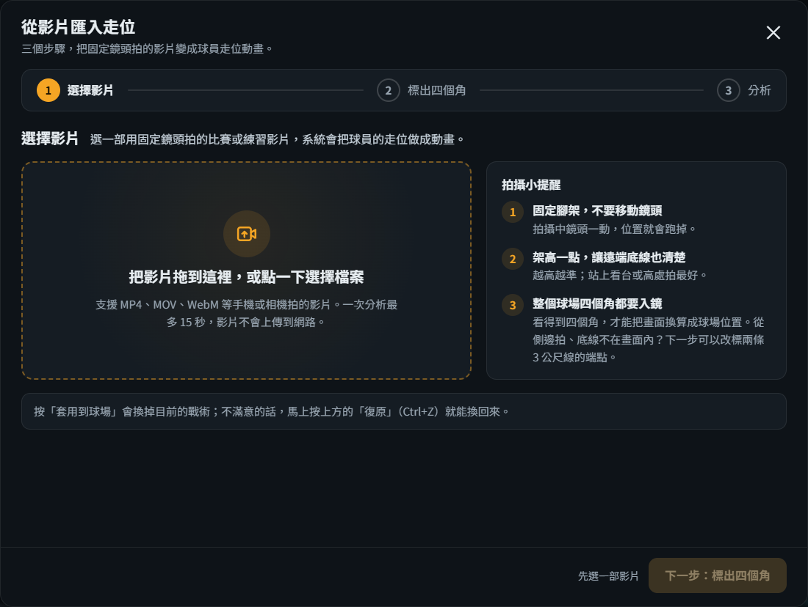
第一步：選擇影片，右邊有拍攝小提醒。 選好之後，拖動滑桿挑一張四個角都看得清楚、沒被人擋住的畫面。長影片可以用−1 秒／+1 秒、−10 秒／+10 秒、▶ 播放找畫面，或在「跳到」輸入時間（長影片打「分:秒」，例如 23:15；短影片打秒數，例如 2.5）；方向鍵每次 1 秒，按住 Shift 每次 10 秒。挑好按下一步：標出四個角。
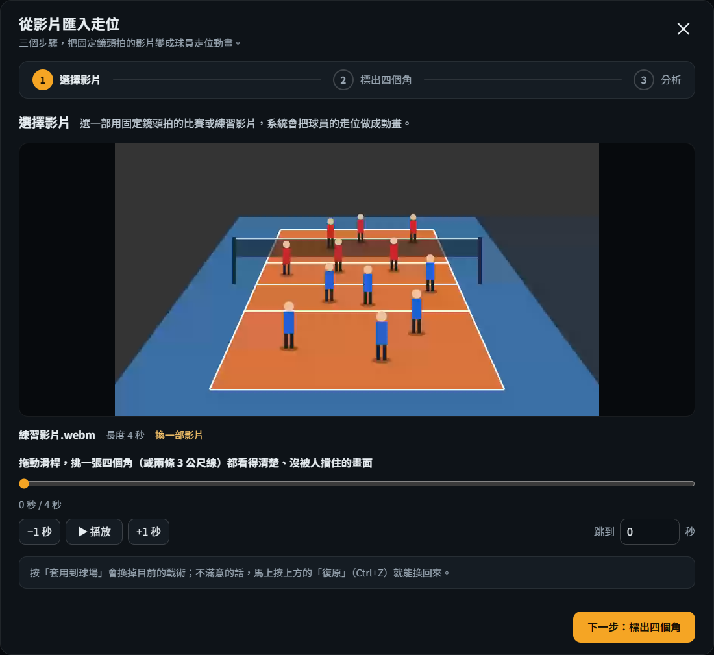
選好影片：拖動滑桿挑一張清楚的畫面。 -
標出四個角
照右邊小圖的順序，點出球場地板的四個角：1 近端左角 → 2 近端右角 → 3 遠端右角 → 4 遠端左角。「近端」是靠鏡頭的那一邊。
- 點錯了，直接拖動圓點調整，或按復原上一步（Ctrl+Z）；全部重點會再問一次才清掉。滑鼠移到畫面上會出現放大鏡，幫你對準。
- 畫面上的黃色細線是推算出的中線和 3 公尺線，應該要和地上的線重疊；沒對齊就再微調。
- 右下的拍攝角度告訴你這個角度換算出的位置大概準不準：很好、普通、偏差大（仍可繼續），或還不能用（點的形狀不像球場）。
- 順序點錯了（例如連線交叉），會提示你按自動修正順序；影片本身是鏡像的，可以按「我的影片是鏡像的，照這樣繼續」。
看不到四個角時，小圖下面有兩種改標法：
- 遠端底線看不清楚？改標中線兩端：點靠鏡頭的兩個角，和球網正下方中線的兩端。
- 從側邊拍、底線不在畫面內？改標兩條 3 公尺線：點兩條 3 公尺線（攻擊線）和兩條邊線的四個交點，再告訴它「我方在」左邊或右邊。
換了標法，上方第 2 步的名稱也會跟著變成「標出兩角和中線」或「標出四個端點」。
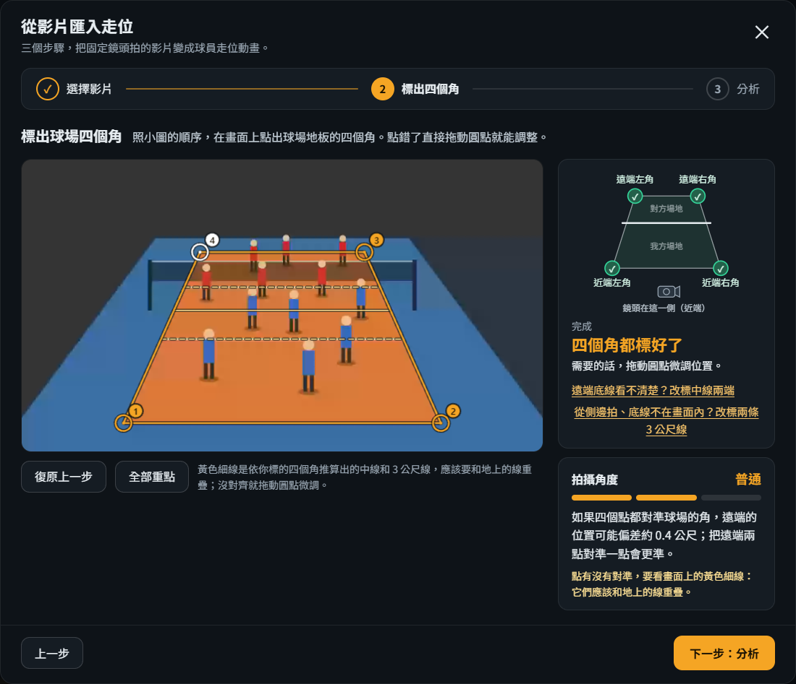
第二步：四個角標好後，會畫出推算的球場線，右下角告訴你拍攝角度準不準。 -
分析
影片超過 15 秒時，先拖動滑桿選要分析哪一段（一次最多 15 秒）。按開始分析，Courtline 會每 0.5 秒看一次畫面，找出場上的人，把他們的腳步換成球場上的位置。隨時可以按取消。
完成後會給你看結果：找到幾位球員（我方／對方各幾位）、做成幾步（起始站位＋幾段跑位）、動畫多長，以及第一步的站位小圖。按套用到球場，就會變成一個叫「影片動畫」的戰術並切到俯視，按播放就能看大家怎麼跑。
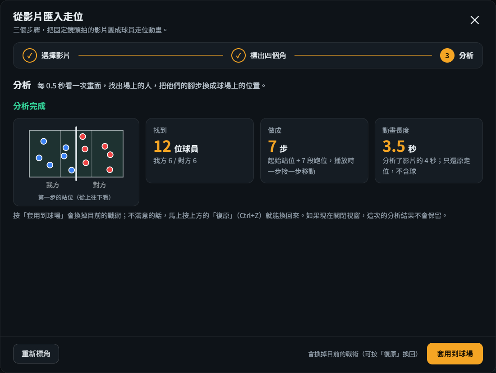
第三步：分析完成，先看結果再決定要不要套用。


⚠️ 注意
- 只還原球員的走位，影片裡的球不會還原。擊球請之後自己加上。
- 第一次分析需要網路，用來下載辨識模型（約 5–10 MB）。影片本身在你的電腦上分析，不會上傳。
- 按「套用到球場」會換掉目前的戰術（需要的話會先問你，見第 11 章）；你在「設定」分頁的用球、空氣和「誰接得到？」全隊標準會保留（個別球員的接球習慣會清掉，因為球員是新的），箭頭和畫線則清掉。不滿意就按復原（Ctrl+Z）換回來。
- 在分析完、還沒套用前關掉視窗，這次的分析結果不會保留（視窗會先問你）。
常見問題
點問題就會展開答案。
我想讓某個人接這一球？
- 還沒加：在場上點他（或在「球員」分頁點他的名字）。右邊會自動切到「球員」分頁，「加下一球」暫時看不到是正常的：直接按讓 他 擊球下面的技術按鈕；也可以按擊球分頁回去，看到「加下一球」右上角寫「由 他 擊球」再按技術。他會跑到上一球落下的位置去打，上一球的球路不變。如果工具還停在瞄準落點，點他只會瞄準那裡的地板，先按 Esc 再點他。
- 已經加好了：在右側「這一記怎麼打」的擊球者選單換人。新選的人會跑到原本打這一球的位置，在空中接上一球（發球就退到底線外）；原本的人回到自己的位置。球仍打到原本的落點。
點了球員，右邊的「加下一球」不見了？
這是正常的：點球員時，右邊會自動切到球員分頁，顯示他的名字、位置，和讓 他 擊球的技術按鈕。
- 要讓他打下一球：直接按讓 他 擊球下面的技術。
- 要回到「加下一球」：按上方的擊球分頁。右上角會寫「由 他 擊球 ×」，表示下一球由他打；按 × 改回自動挑選。
- 不想選他：按「球員」分頁最上面的← 全部球員，或按 Esc。
為什麼擊球者不是我想要的人？
看「加下一球」右上角：寫著「由 我3 擊球」，就是你剛剛點過或拖過我3，他被選中了。按標籤上的 × 改回「自動挑選擊球者」。
寫「自動挑選擊球者」時：發球找我方離底線最近的人，攔網找網前的人，其他球找球落下來那一邊離球最近的人。詳見誰來打這一球？
為什麼攻擊變成吊球？
結果卡寫「變成吊球」，表示這記攻擊是往上打出去的（擊球角度往上超過約 12°）。通常是攻擊手接球的位置太低，或要打的落點太遠。
- 把擊球高度調高（跳起攻擊約 3 公尺）。
- 讓前一球（舉球）舉得更高、更靠網：點舉球那一記，重新瞄準落點到網前。
- 攻擊的落點點近一點，或直接拖動「擊球角度」往下。
為什麼球停在半空中？
- 球被下一個人接走了：球停在他手上，有一個橘色的接球圈，結果卡寫「傳到 X」或「被 X 攔下」。這是正常的，見球怎麼在空中傳遞。
- 「傳到位」：球已經傳到隊友該接的高度，但後面還沒加下一球。照提示加一記（例如「舉球」），就會有人去接；加了之後下方步驟上那一步後面沒有人名，見下一題。
- 暫停在某一刻：左上角的「球的數值」小卡會寫這一刻球的高度、位置和速度，點下方的步驟就回到步驟畫面。
- 「球還沒落地」：4 秒內沒落地，通常是角度或擊球點太高，把角度放低或重新瞄準。
下方步驟上某一步後面沒有人名（「還沒有人打這一球」）？
表示 Courtline 沒有替這一球找到人，結果卡會寫黃色的還沒有人打這一球。最簡單的修法：在下方「這一記怎麼打」的擊球者選一位球員。常見的原因是上一球被瞄到太遠、出界，或傳到沒有人的地方。
也可以從上一球修起：
- 按 Ctrl+Z 退掉這一記舉球（畫面會回到接發那一步）。
- 按 T（瞄準落點），點網前中間的地板（舉球員 對3 附近），替接發重新指定落點。
- 再按一次舉球：下方那一步會寫「舉球 對3」。接著再加攻擊。
另一個方法：在場上點舉球員的名牌，在「球員」分頁按讓 對3 擊球下面的舉球。對3 會跑到接發落下的位置去舉球，接發的球路不變。
新加的球跑到中間，順序亂掉了？
停在某一步時，新的一球會接在那一步後面。你可能點回前面的步驟看過，才按技術按鈕。
解決方法：按 Ctrl+Z 復原，點起始站位或最後一步，再加一次（停在起始站位時，新的一球一定接在回合最後）。或用步驟下方的提前／延後調整順序。
球一直掛網怎麼辦？
最快的方法是用瞄準落點重新點一個落點，Courtline 會自己找出能過網的球速和角度。也可以手動調整：
- 把擊球角度往上調，或把球速加快。
- 把擊球高度調高（例如跳發、跳起攻擊）。
- 落點不要選得太靠近網子。
- 女子組記得把上方的網高切到女子 2.24。
結果卡片上的「過網」會告訴你差幾公分。
球飛出界了？
結果卡片會說超出多少，例如「超出對方底線約 80 公分」。重新瞄準落點最簡單；手動的話，可以把球速放慢、角度放低，或改用上旋讓球下墜得快一點。方向偏了就調整「方向」。上一球出界時，加下一球不會自動找人接。
點了落點卻說「離網太近」？
發球、攻擊、自由球如果要打成超過 8 公尺高的高吊球才落得到，Courtline 會拒絕這個落點。請點離網遠一點的位置，或把擊球點移近一點。
被拒絕之後，工具仍停在瞄準落點，球路也沒有變：直接再點一個離網遠一點的位置就好，不用再按一次瞄準。那行提示幾秒後會自動消失（也可以按 × 關掉）；再點一個位置後出現的「已瞄準：…」是新的結果，不代表又被拒絕。
對方 1 號位在畫面的哪裡？
在我方視角裡，對方 1 號位在畫面的左上角（對方面向我們，他們的右後是我們的左邊）；我方 1 號位在右下角。寬螢幕的俯視是橫的，對方 1 號位在右上角。最簡單的方法：瞄準時場上會直接標出號區，滑鼠旁也會寫「對方 1 號區」。看號位圖。
為什麼球員在下一步又跑回原位？
每一步都記錄自己的站位。你在某一步移動球員時，後面還沒動過他的步驟會跟著改；但如果後面某一步已經另外擺過他（例如他在那一步跑去接球），那一步會保留原來的位置，所以播放時他會跑回去。
解決方法：在下方點那一步（或按 →），再把他拖到你要的位置。
按播放沒反應，或從中間開始播？
- 播放鍵是灰色的：還沒有可以播放的內容。先加一球，或加一段跑位並移動球員。
- 停在某一步按播放，是從那一步開始播；想從頭看，按旁邊的 ↺（從頭播放），或先點起始站位或最後一步。
- 游標停在文字框（例如戰術名稱）裡時，空白鍵會變成打字。先點一下球場再按。
可以排輪轉嗎？
目前沒有輪轉功能。變通的方法：每一輪做成一個戰術檔，在起始站位把球員拖到那一輪的位置，取名「輪 1 接發」「輪 2 接發」…分別存檔。
我的戰術存在哪裡？換電腦怎麼辦？
平常會自動存在這台電腦的這個瀏覽器裡。要換電腦，先按檔案 → 儲存成檔案下載戰術檔，再到另一台電腦按檔案 → 開啟戰術檔…打開。詳見分享給其他教練、或換電腦。
可以印出來嗎？
Courtline 沒有列印功能，可以用電腦的截圖功能把球場畫面截下來。做法見想印出來或貼到講義？
影片分析失敗？
- 沒有網路：第一次分析需要下載辨識模型，連上網路後按「再試一次」。
- 標的點不對：順序要照小圖；按「重新標角」，確認黃色細線和地上的線重疊。從側邊拍的話，也確認「我方在」左邊還是右邊。
- 鏡頭有移動或太低：請用架在腳架上、高一點的影片。
- 影片太短（至少 1 秒），或人太小、太暗、被擋住：換一段看得清楚的片段，按「用這一段再分析」，或換一部影片。
可以用手機或平板嗎？
可以打開、播放和做簡單的修改，畫面會自動改成直式排列：最上面兩排是戰術名稱和按鈕（檔案、從影片匯入、使用手冊變成小圖示），接著是工具和球場，往下捲是播放、步驟和右側的分頁。在球場上：一指上下滑是捲動頁面，一指左右滑是轉動視角，兩指開合是縮放；點球員可以選取、拖曳。小螢幕比較擠，排戰術建議用電腦（或橫放的平板）；手機很適合拿到場邊播放給球員看。

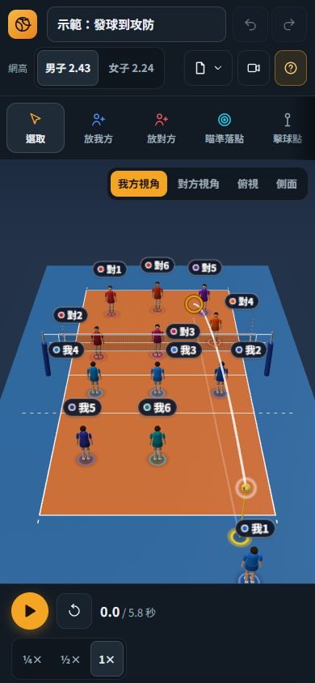

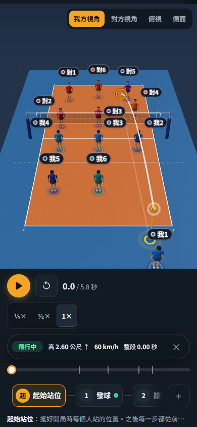
結果準不準？
球路依照重力、空氣阻力和旋轉計算，用的是室內場館的一般數值，很適合排戰術和教學，但不是官方認證的數據。真實比賽還會受到球員技術、用球和場館影響。詳見關於模擬結果。
按錯了可以復原嗎？
可以。按 Ctrl+Z 或上方的復原，最多可以退回 50 個動作；Ctrl+Y 重做。新增空白戰術、載入示範、開啟檔案、套用影片之後，也可以按復原換回原本的戰術。關掉網頁後，復原紀錄就沒了。
怎麼讓某個人晚一點才跑，或比球早一點站好？
- 點下方的步驟（第 1 步以後），再點場上那位球員。
- 在右側「球員」分頁的這一步的跑動時機，填球擊出後幾秒才起跑（延遲／反應時間）。
- 要他提早到位，把到位時間改成比球早到，再填早幾秒。
詳細說明見這一步的跑動時機；球到時同時到位是下一個擊球者的預設。
發球員怎麼拋球、助跑、跳發或跳飄？
- 點一記發球，在右側「擊球」分頁找到發球動作。
- 勾選顯示拋球、助跑、起跳，再選站著發、跳飄或跳發。
- 要微調，拉拋球高度、助跑距離、開始助跑、跳躍高度的滑桿。
詳細說明見發球動作。
攻擊手為什麼跑到擊球點前面就停下來？
因為他跑的是起跳點，不是擊球點。攻擊手先跑到起跳點，在那裡離地，再在空中飛到擊球點把球打出去，所以看起來是在擊球點前面（或旁邊）停下、跳起來。
- 點該攻擊，在右側「擊球」分頁看攻擊動作裡的起跳點，那就是他跑到的地方。
- 想讓起跳點離擊球點近一點，選自動（原地往上跳），或把力道調小、跳法改成快攻。
- 想讓他一直跑到擊球點才跳，就把跳躍高度調到 0（不跳）。
詳細說明見攻擊動作。
為什麼我改一個數字，別的數字也跟著變？
因為有些數字本來就是綁在一起的：發球和攻擊的跳躍高度、起跳點、力道、落地點互相影響；跑動的起跑延遲、到位、跑動速度也是；每一記球的球速、角度、方向、擊球點和落點也是。改一個，其他的要跟著算。
- 不想讓某個數字被動到，就按那一列右邊的鎖頭鎖住它，鎖住的絕對不會變。
- 沒鎖的只會動必要的幾個，並寫在「連帶改變」那一句。
- 如果出現「已調到極限」，代表被鎖住的數字擋住了，打開被點名的鎖就能繼續調。
詳細說明見跳躍的數字互相影響，可以上鎖與鎖住數字。
鎖住落點後為什麼球速自己變了？
因為你鎖的是「球要落在哪裡」，不是球速。這時你再調擊球角度、移動擊球點，球要仍然落在同一點，球速和方向就得跟著改：角度抬高，球飛得更久，所需的球速也不同；擊球點換位置，球速和方向都要重算。這是鎖頭在幫你守住落點。
- 滑桿下面那一句「連帶改變：球速、方向」，就是告訴你哪些數字跟著動。
- 球速也不想變，就把球速旁的鎖頭一起鎖住；只是兩個都鎖住時，能調的範圍會變小，擋住時會寫「已調到極限」。
- 擊球點和旋轉不會被偷偷改掉；上一球的落點鎖住時，這一球的擊球點也會固定。
詳細說明見鎖住數字。
在哪裡看球的速度、高度這些數值？
球場左上角的球的數值小卡：播放時會跟著球更新，拖時間條停在任何一刻，就能讀到那一刻球的高度、位置和速度。看不到的話，按小按鈕「球的數值」打開。見球的即時數值。
「起始站位」為什麼不能加擊球？
起始站位只記錄開局時每個人的位置。球從第 1 步開始飛；停在起始站位按技術按鈕，新的一球會接在回合最後一球的後面，放進自己的一步。
附錄 A・進階設定
大多數時候不用改。想讓「誰接得到？」更貼近你的球隊（接球範圍的粗細、長度，以及上手與低手的比例），或換用不同的球，就看這裡（右側「設定」分頁）。

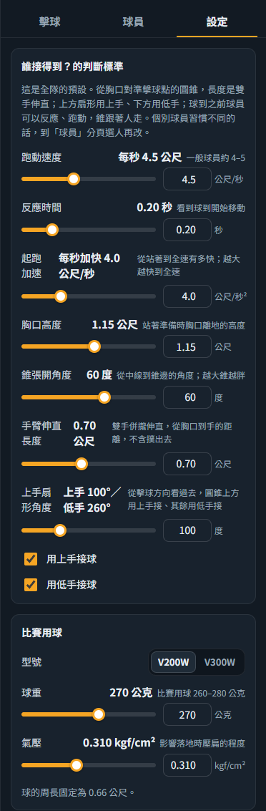
誰接得到？的判斷標準
- 跑動速度：球員每秒能跑幾公尺。一般球員約 4–5（預設 4.5）。
- 反應時間：看到球到開始移動要多久（預設 0.20 秒）。
- 起跑加速：從站著到全速有多快（預設每秒加快 4 公尺/秒，大約 1.1 秒到全速）。越大，越快到全速。
- 胸口高度：站著準備時胸口離地多高，也是錐的尖端（預設 1.15 公尺，可調 0.60–1.60 公尺）。
- 錐張開角度：從錐的中線到錐邊是幾度，越大錐越胖（預設 60 度，可調 10–89 度）。
- 手臂伸直長度：雙手併攏伸直，從胸口到手的距離，不含撲出去（預設 0.70 公尺，可調 0.30–1.20 公尺）。
- 上手扇形角度：從擊球方向看過去，圓錐上方用上手接的扇形有幾度，其餘是低手（預設 上手 100 度／低手 260 度，可調上手 10–350 度）。畫面上會同時寫出上手和低手各幾度。
- 用上手接球、用低手接球：兩個勾選框，預設都勾。關掉「用上手接球」，就只剩下方的低手扇形；兩個都關掉，這個設定下的球員什麼球都接不到。
這裡是全隊的預設。錐是從胸口對準擊球點的圓錐，球到之前球員可以先反應、再跑動，錐跟著人走（原理見第 6 章）。個別球員習慣不同的話，到球員分頁的「接球習慣」另外調整。這幾個數字是第一次的估計值，可以依你的球隊調整。這是快速檢查防守站位的提示，不是體能測驗。
比賽用球
- 型號：V200W 或 V300W。
- 球重：比賽用球是 260–280 公克。
- 氣壓：影響球落地時壓扁的程度。球的周長固定為 0.66 公尺。

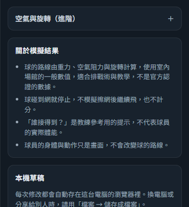
空氣與旋轉（進階）
空氣密度、空氣阻力、旋轉影響、旋轉影響上限，以及「計算落地衝量」和反彈係數。一般室內場館不需要改；改亂了，按回復室內預設。
關於模擬結果
四點說明算了什麼、沒算什麼，內容和附錄 C 相同。
本機草稿
清除瀏覽器裡的草稿：確認後，這台電腦的瀏覽器就不再記得這個戰術（適合共用電腦）。畫面上的戰術會留著，名字旁顯示「尚未自動儲存」；下一次修改又會重新自動儲存。
網高
不在這裡，在畫面最上方切換男子 2.43／女子 2.24。
附錄 B・快捷鍵與滑鼠
記不住也沒關係：在 Courtline 裡按 ?，或按左側工具最下面的? 快捷鍵，就會跳出一覽表。
在文字框裡打字時，快捷鍵不會作用。Mac 請把 Ctrl 換成 ⌘。
| 按鍵 | 工具 |
|---|---|
| V | 選取 |
| Q | 放我方 |
| W | 放對方 |
| T | 瞄準落點 |
| R | 擊球點 |
| A | 箭頭 |
| D | 畫線 |
| 按鍵 | 作用 |
|---|---|
| 空白鍵 | 播放／暫停 |
| ← → | 上一步／下一步 |
| Esc | 回到「選取」、取消瞄準或畫到一半的線（瞄準時想改選球員，先按 Esc） |
| Ctrl+S | 儲存成檔案 |
| Delete | 刪除剛選取的球員、畫線或這一記* |
| Ctrl+Z | 復原 |
| Ctrl+Y Ctrl+Shift+Z | 重做 |
| + − | 放大縮小球場（先點一下球場） |
| Shift+方向鍵 | 轉動視角（先點一下球場） |
| 0 | 視角回正（雙擊空白處也可以） |
| ? | 打開或關閉快捷鍵一覽 |
* Delete 會刪除最後點選的東西：選中的球員、剛畫好的箭頭或線，或選到的那一記球。Backspace 只刪剛畫好的箭頭或線，或選到的那一記球，不會刪球員（刪球員請按 Delete）。播放中不會刪。刪錯了按 Ctrl+Z。

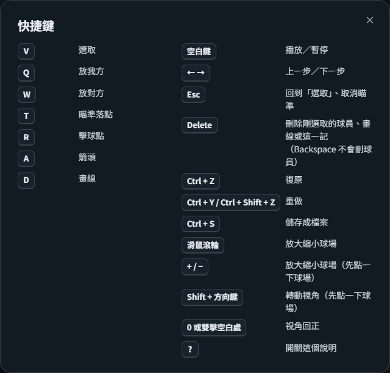
滑鼠
| 動作 | 作用 |
|---|---|
| 點或拖曳球員 | 選中他（下一球由他打）；拖曳會移動他在亮著那一步的位置 |
| 拖曳落點圈 | 改這一球的落點（選取模式；接球的人跟著移動）。圈上有別的球員或名牌時會改成選到那位球員，請用瞄準落點（名牌擋住時可切到俯視） |
| 拖曳空白地板 | 轉動視角（選取模式） |
| 滾輪 | 先點一下球場再滾動，拉近拉遠（或按住 Ctrl 滾動） |
| 雙擊空白地板 | 回到原本視角 |
| ⟲ 回到原本視角 | 轉過或拉近後出現在球場上，按一下復位 |
附錄 C・關於模擬結果
Courtline 是排戰術和教學的工具。知道它算了什麼、沒算什麼，用起來更安心。
- 球路怎麼算：依照重力、空氣阻力和旋轉計算，使用室內場館的一般數值。適合排戰術和教學，不是官方認證的數據。
- 碰到網就停：球碰到網子就停下來，不模擬擦網後繼續飛，也不計分。
- 「誰接得到？」是提示：給教練參考用，不代表球員的實際體能。
- 球員不會擋到球：球員的身體和動作只是畫面，不會改變球的路線；在空中「接到球」是因為下一球從那裡打出，不是身體碰撞。
- 飄球不晃：飄球當作完全不旋轉，不模擬左右晃動。
- 最多算 4 秒：4 秒內沒落地的球，會顯示「球還沒落地」。
- 資料留在你的電腦：計算都在你的瀏覽器裡完成，戰術不會上傳。